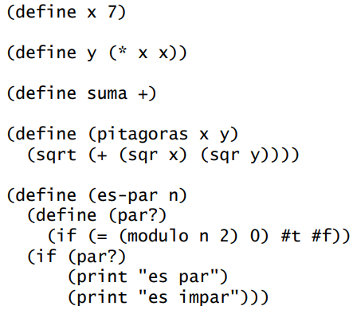
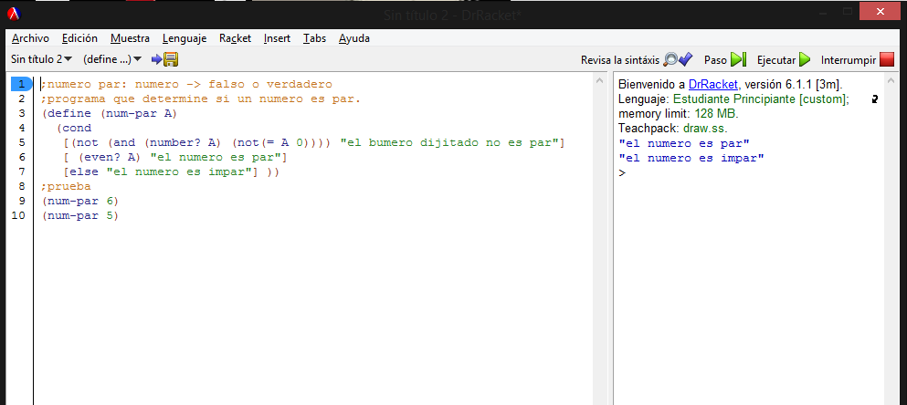

Símbolos
Scheme, como lenguaje de programación, utiliza de manera análoga a las palabras los denominados símbolos y éstos se forman uniendo las letras del alfabeto (sin distinguir mayúsculas de minúsculas), los dígitos del 0 al 9 y cualquier otro carácter que aparezca en el teclado salvo:
( ) [ ] { } ; , "' ` # \
ya que tienen un significado especial, similar al que tienen los signos de puntuación. Los caracteres:
+ - .
también son especiales y no deben aparecer en primer lugar en un símbolo. Los númerosno se consideran símbolos en Scheme.
Un símbolo que es usado para representar un valor se denomina variable. El intérprete determinará el significado de cada variable; los números tienen su valor usual. Siguiendo la analogía con los lenguajes el equivalente en Scheme a las frases son las expresiones, que pueden consistir en un símbolo, un número o una lista, es decir, un paréntesis izquierdo, seguido de expresiones separadas por espacios en blanco, y para terminar un paréntesis derecho. La primera de dichas expresiones debe evaluar a un procedimiento, evaluándose las restantes como los argumentos del mismo.
Sintaxis
Scheme posee una sintaxis reducida comparada a otros lenguajes. Utiliza la notación prefija. Por ejemplo, si se desea realizar la suma 1+1, se debe programar la siguiente instrucción
(+ 1 1)
Los paréntesis son obligatorios, ya que separan las instrucciones que serán evaluadas por el intérprete. Para realizar comentarios dentro del código, se utiliza el ";", así se marca que toda la línea será de comentario Ejemplo:
;Esta línea es un comentario, y la orden de abajo es ejecutada
(+ 1 1)
Sintaxis Básica
Expresión -> átomo | lista
átomo -> número | string | identificador | carácter | boolean
lista -> '(' secuencia-expresión ')'
secuencia-expresión -> expresión secuencia - expresión | expresión
función -> ( nombre_función argumento1 argumento 2... argumento n)
Analizar la sintexis básica nos ayudará a empezar poco a poco al mundo del lenguaje Scheme.
Esqueleto de los programas
Un ejemplo sería las Definiciones en Scheme.
(define <'nombre-nuevo'> <'valor-inicial'>)

Aplicación a descargar para editar y ejecutar
El lenguaje Scheme necesita un IDE para trabajar en ello, por lo tanto, el entorno de programación DrRacket le ofrece un lugar para programar con dicho lenguaje.
Paradigma
Scheme es un lenguaje multiparadigma pero principalmente funcional, y una de sus características principales es que los programas se construyen mediante la definición de funciones.
Ejemplo
Programa en Scheme que determina si un número es par o impar.
